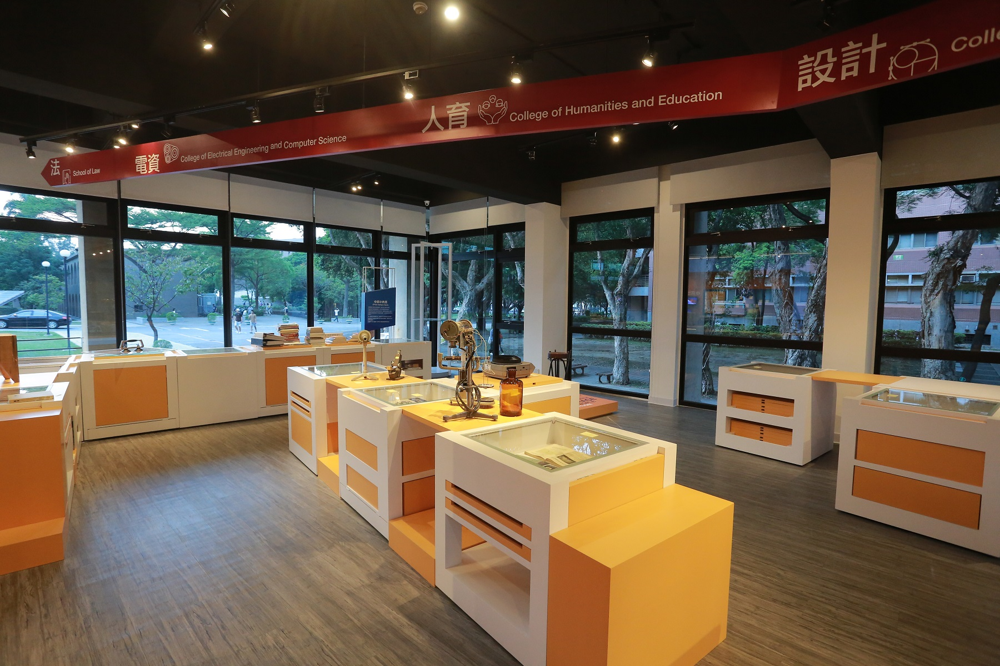
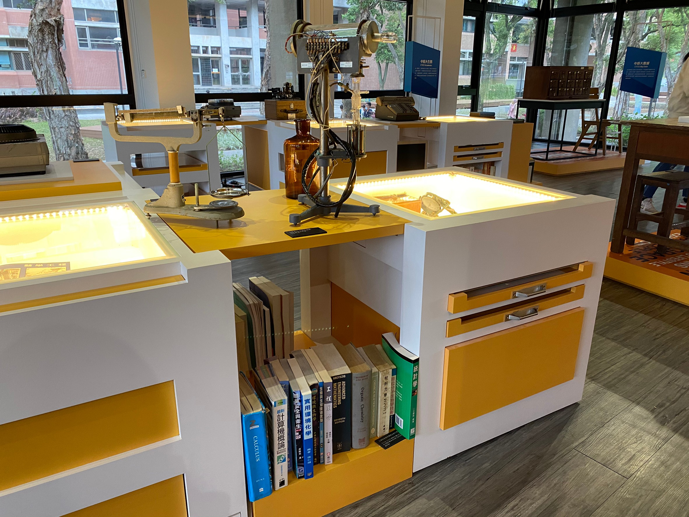
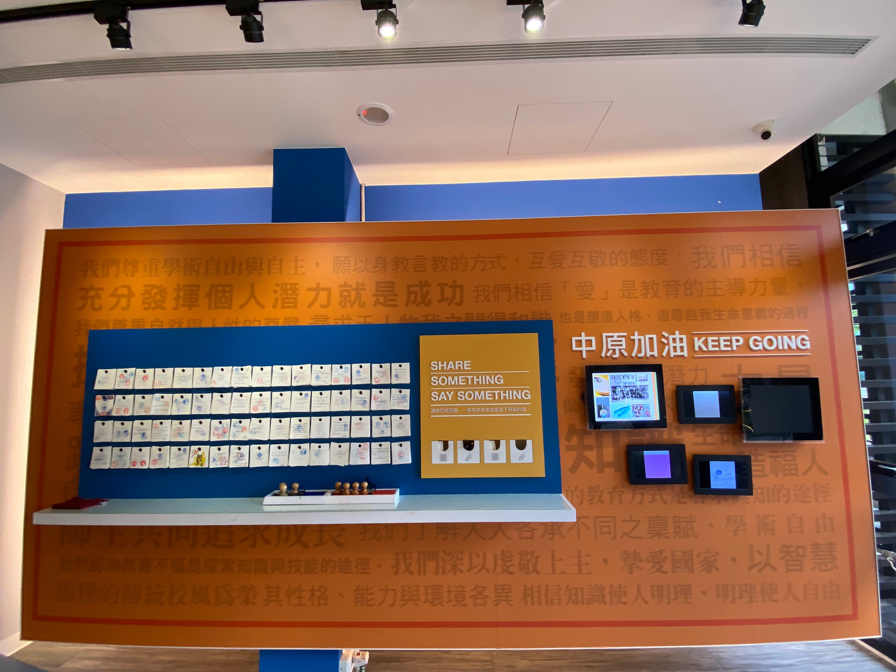

中原大學校史博物館
校史館緣由
中原大事紀
設計理念
展廳介紹
力行廳
篤信廳
影片介紹
關於我們
E /中原大數據
從中原新鮮人到全人的大學生活，你知道自
已讀過多少本書？上課多少時數？寫過多少
張考卷嗎？老中原人的成績單，畢業紀念冊
，以及參與過的校園活動，與你所擁有或經
歷的有什麼不同呢？這些年中原人的青澀歲
月，在這裡勾起陣陣的漣漪。

F /中原大生態
從一開始理，兩學院的200位學生，到現在7
個學院共計1萬6千多學子，中原讓學生適才
適性發展，且為落實學用合一，增設就業學
程，跨領域學程，專精學程及推動適性轉系
，以落實本校教育宗旨與理念，是中原獲得
許多第一名的關鍵。

G /中原小角落
中原是一所獲得外部肯定的友善校園，懷恩
樓、鐘塔，信望愛合院生態村、張靜愚紀念
圖書館，全人教育村，維澈聯合行政服務大
樓等校園的一景一幕，都與每一位中原人共
織出璀璨的校園生活。

H /中原加油
邁向全人典範是中原永續發展的目標在此
提供參觀者在結束離開校史館前，一起為
中原加油並留下祝福的話，另也提供紀念
戳章留念，並以數位相框方式記載其他參
觀者對中原的祝福。